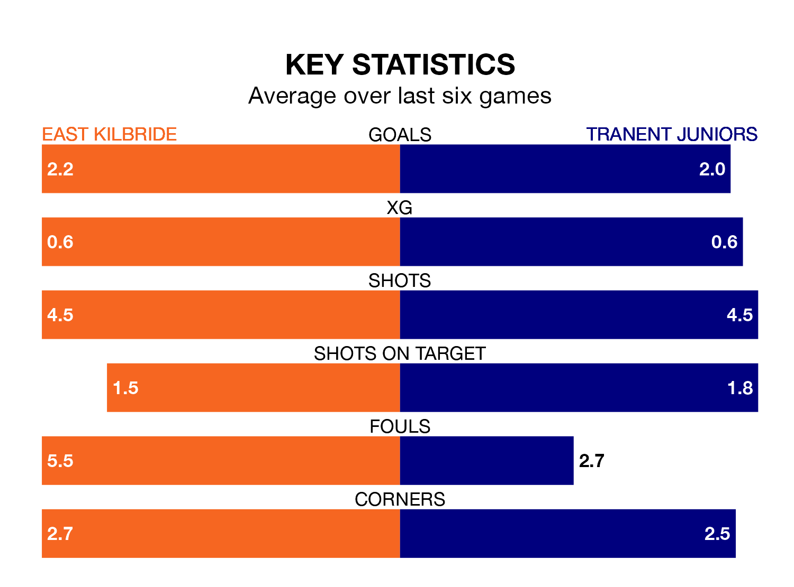

Two of the Lowland Football League's top sides face each other at K Park Training Academy in Tuesday's late kick-off, when table-topping East Kilbride host third-placed Tranent Juniors.
East Kilbride have picked up 19 wins and three draws from 24 games so far this season, and sit 14 points above the visitors going into the 7.45pm match.
The Belters, meanwhile, have won 14 and drawn four of 22, picking up 46 points.
With 69 goals in 24 games so far this season, East Kilbride are the league's joint-highest scorers with 2.9 goals per game. And they are conceding fewer than average, letting in 28 goals at a rate of 1.2 per game.
Tranent Juniors are also above average scorers, with 2.3 goals per game, compared to a league average of 1.7. They have conceded 1.0 goal per game.
The Kilby are in good form in the Lowland Football League, with four wins and a draw from their last six games.
With three wins and a draw over that period, the Belters's form is worse – they have taken 10 points from 18, compared to the home team's 13.
In the last five years, East Kilbride and Tranent Juniors have played each other on four occasions. East Kilbride won two of them, Tranent Juniors one, and they drew once.
On average, the Kilby scored 1.5 goals and the Belters 2.8 in those matches.
Their last meeting was on October 28, when Tranent Juniors won 7-0 at home.
East Kilbride's last match was on Saturday, a 2-1 win against Cowdenbeath.
Tranent Juniors beat Gretna 2008 3-1 last time out, also on Saturday.
Updated: 13:30 (UTC), 12/02/24